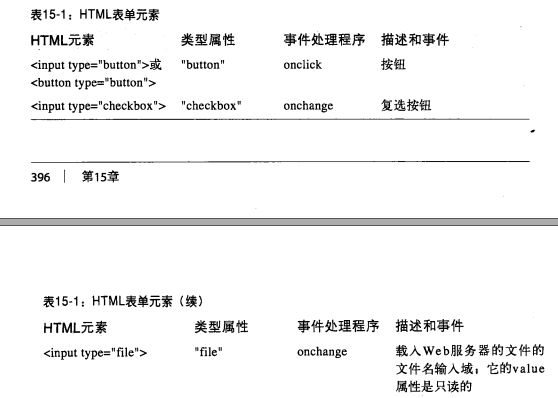
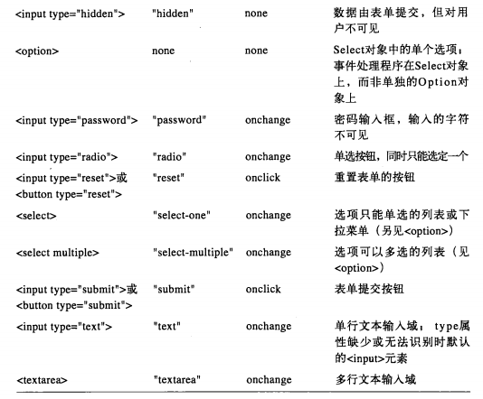

- 15.9HTML表单
- HTML表单就是第一代web应用程序背后的运行机制,它根本就不需要javascript
- 即使当整个表单数据都是由客户端javascript来处理并不会提交到服务器时,HTML表单元素仍然是收集用户数据很好的方法


- 15.9.1选取表单和表单元素
- 支持querySelectAll()的浏览器中,从一个表单中选取所有的单选按钮或所有同名元素,name或id属性的form元素能够通过很多方法来选取
- form对象本身的行为类似于多个表单元素组成的htmlCollection集合,也可以通过name或数字序号来索引
- elements属性而非直接访问method属性
- 15.9.2表单和元素的属性
- elements[]数组是form对象中最有趣的属性.form对象中的其他属性相对没有如此重要.action,encodeing,method和target等HTML属性,这些属性都控制了表单是如何来提交数据到web服务器并如何显示的
- javascript的form对象支持两个方法submit和reset它们完成同样的目的


- 15.9.3表单和元素的事件处理程序
- 每个form元素都有一个onsubmit事件处理程序来侦测表单提交,还有onreset事件处理程序来侦测表单重置
- onsubmit程序通过返回flase能够取消提交动作
- javascript程序一个机会来检查用户的输入错误,目的是为了避免不完整或无效的数据通过网络提交到服务端程序
- 用户与表单元素交互时它们往往会触发click或change事件,通过定义onclick或onchange事件处理程序可以处理这些事件
- 15.9.4按钮
- 以input元素定义的按钮会将value属性值以纯文本显示,超链接与按钮一样提供了onclick事件处理程序
- 如果onclick事件处理程序返回false,这些按钮默认动作不在执行
- 15.9.5开关按钮
- 属性是可读/可写的布尔值,它指定了元素当前是否选中。defaultChecked属性也是布尔值,它是HTML属性checked的值,它指定了元素在第一次加载页面时是否选中
- 15.9.6文本域
- 文本输入域在HTML表单和javascript程序中可能最常用元素
- 不同的文本输入元素定义onkeypress,onkeydown和onkeyup事件处理程序.可以从onkeypress或onkeydown事件处理程序返回false,防止记录用户的按钮
- 15.9.7选择框和选项元素
- select元素表示用户可以做出选择一组选项
- select元素能以两种不同的方式运作,这取决于它的type属性是如何设置的
- 某种程度上'slect-multiple'元素与一组复选框元素类似,'select-one'元素和一组单选元素类似
- select元素触发onchange事件处理程序.它的可读/写属性selectedIndex指定了哪个选项当前被选中